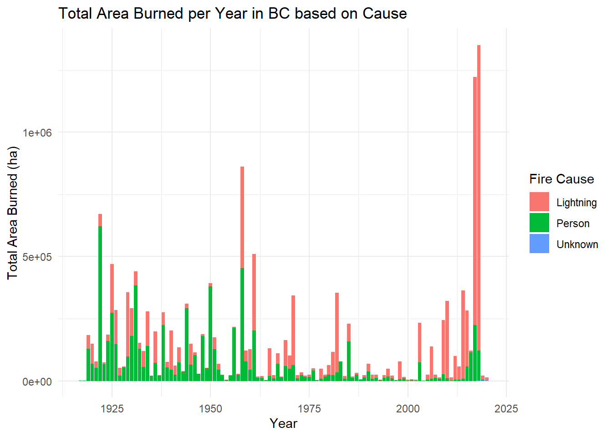
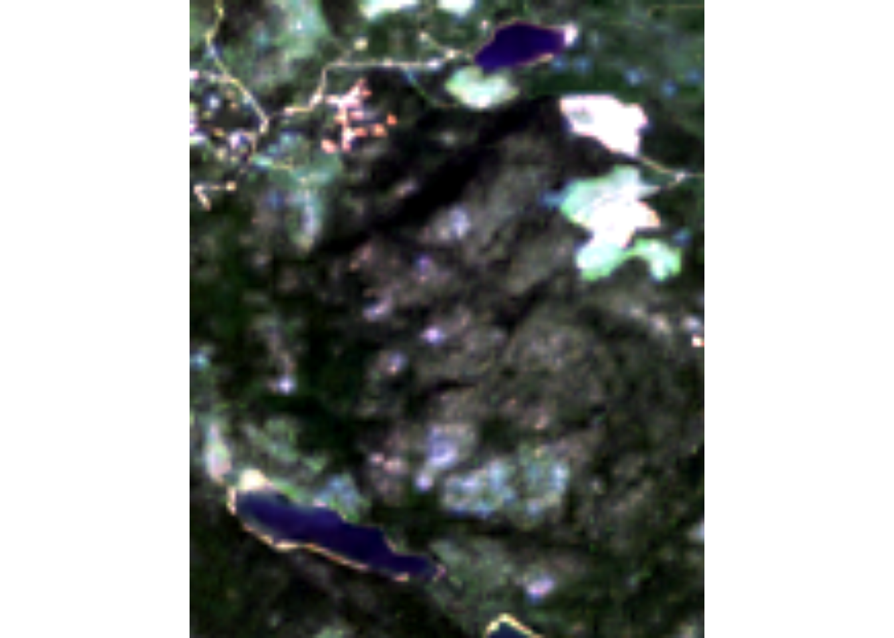
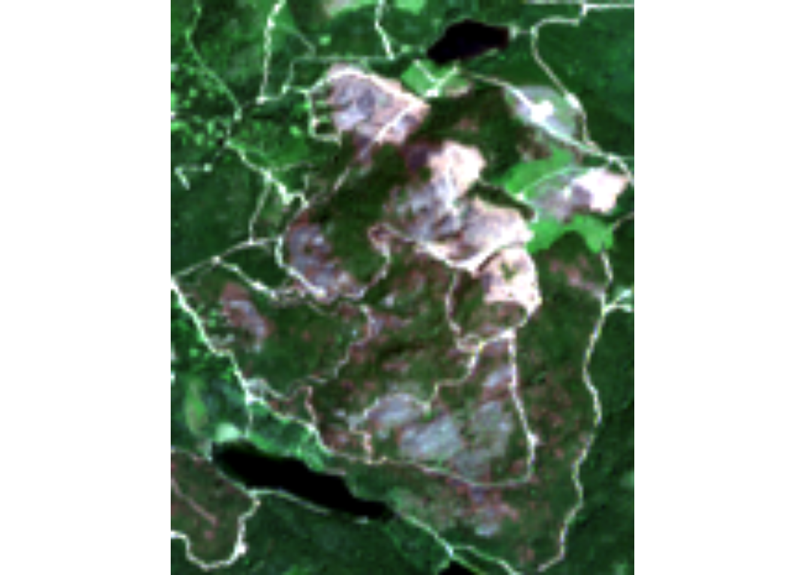
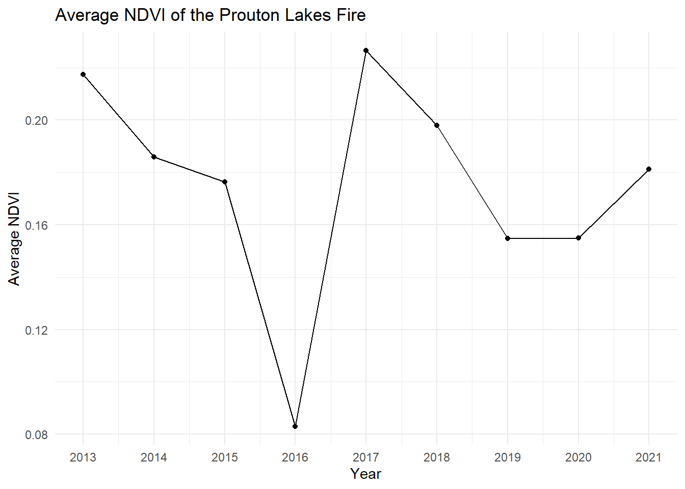
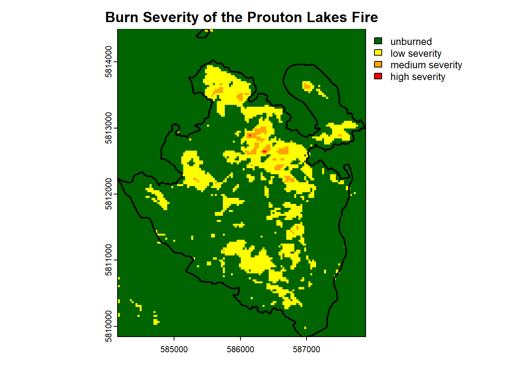
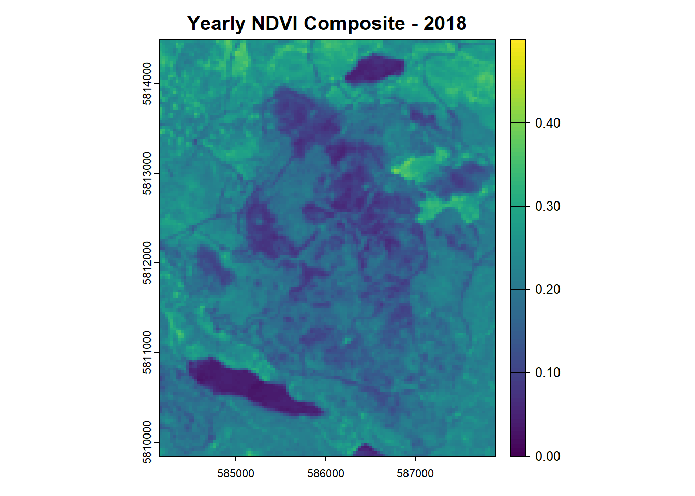
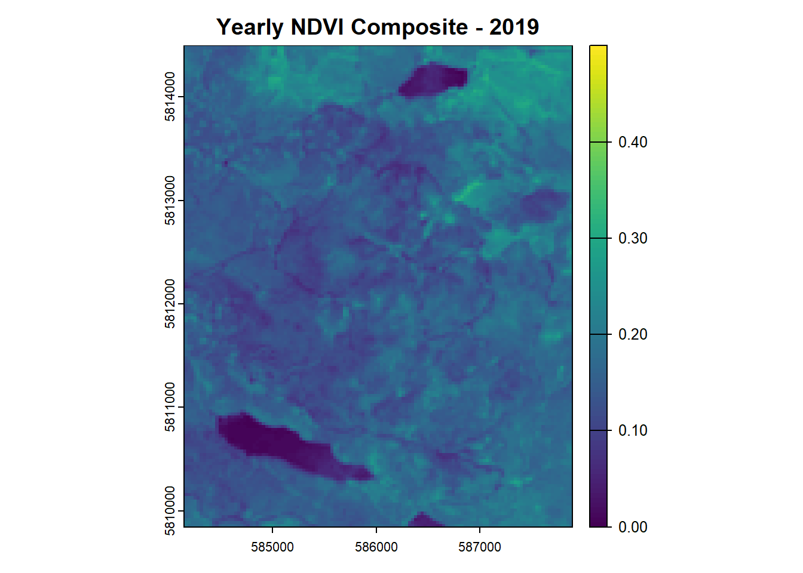
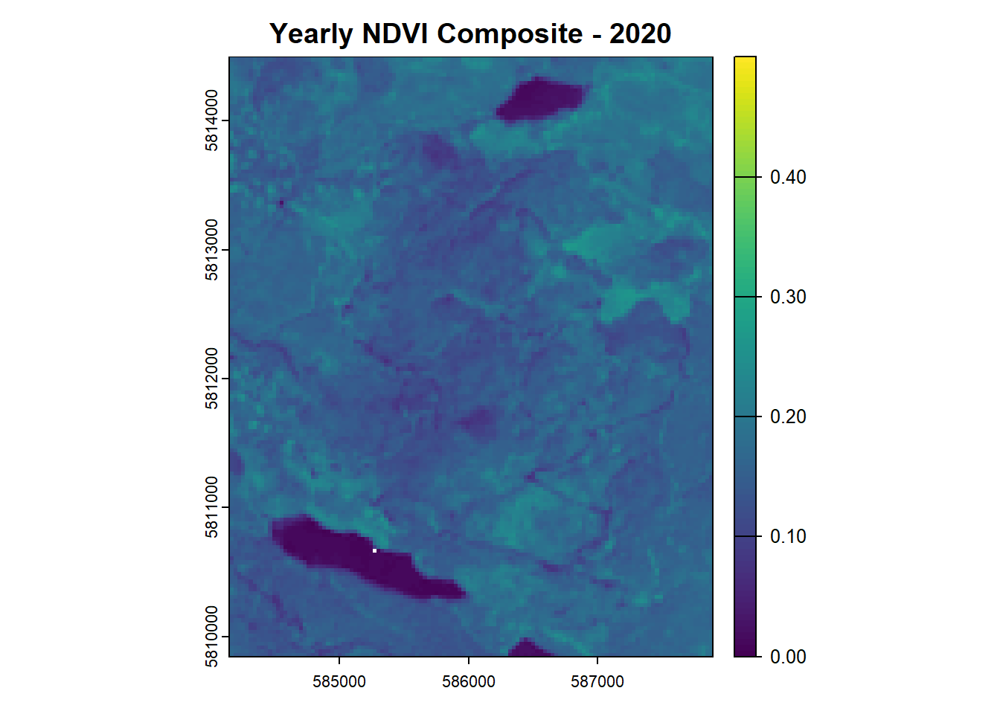
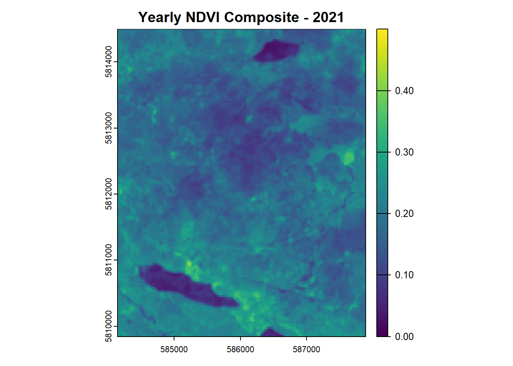
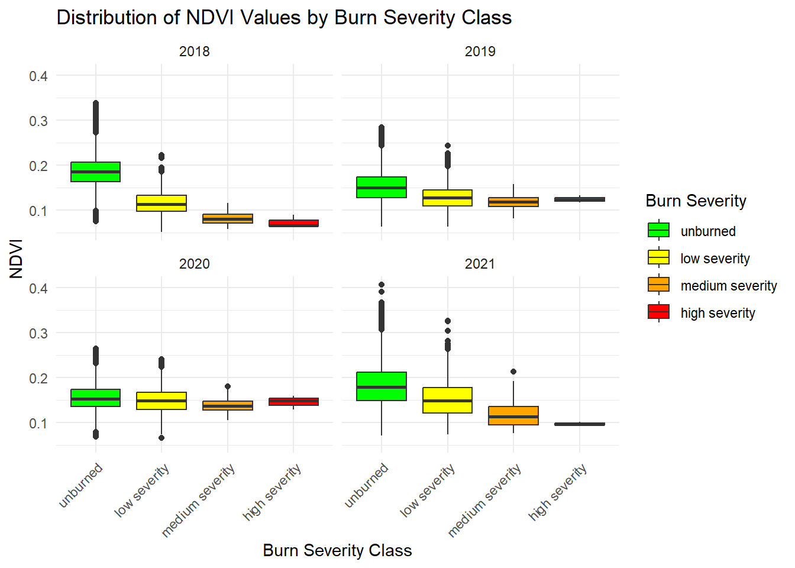

Code
#| execute: false
#| eval: false
#| code-fold: true
#| code-summary: "Show/Hide Code"
#Attach packages
library(terra)
library(sf)
library(dplyr)
library(ggplot2)
library(readr)
library(stringr)
library(lubridate)
library(tidyr)In this lab, I analyze the burn severity of the 2017 Prouton Lakes wildfire using Landsat 8 time-series data (2013–2021) to assess vegetation loss and post-fire recovery. By computing NDVI and NBR indices, I quantify fire impact and track regrowth over time. Additionally, I classify burn severity using dNBR thresholds and examine recovery patterns across severity classes.
This analysis is valuable for forest management, wildfire risk assessment, and ecological monitoring, helping decision-makers understand fire dynamics and long-term landscape recovery. Similar methodologies can be applied to other wildfire-prone regions, post-disaster assessments (e.g., volcanic eruptions, floods), and habitat restoration projects, providing critical insights for conservation and land-use planning.
Identify total fires and area burned in 2017. Extract fire IDs and areas for the three largest fires in 2017. Compute the area burned by the Prouton Lakes fire (C30870). Visual Output: Bar plot of total area burned per year in BC, colored by fire cause.
#| execute: false
#| eval: false
#| code-fold: true
#| code-summary: "Show/Hide Code"
#read in the shape file
fires <- st_read("C:/Users/lorsigno.stu/OneDrive - UBC/Desktop/Documents/GEM 520/Lab 8/lab8_finalDemonstrationOfRSkills-assign/data/PROT_HISTORICAL_FIRE_POLYS_SP/H_FIRE_PLY_polygon.shp", quiet = TRUE)
#filter out the correct year 2017 into another df
fires_2017 <- fires %>% filter(FIRE_YEAR == 2017)
#count number of fires within that year
number_fires_2017 <- nrow(fires_2017)
#calculate the area, in ha, of the fires in 2017
area_ha_fires_2017 <- sum(fires_2017$SIZE_HA, na.rm = TRUE) #there are no NA values, but I would assume that theres been some preprocessing of this dataset
#find the area of the three largest fires in 2017
#sort the SIZE_HA into ascending order, extract 3 top rows
largest_fires_2017 <- fires_2017 %>%
arrange(desc(SIZE_HA)) %>%
slice(1:3)
#prouton lake fire is polygon C30870
prouton_fire <- fires %>% filter(FIRE_NO == 'C30870')
prouton_fire_area <- prouton_fire$SIZE_HA
fires_no_geom <- fires %>% st_drop_geometry()
#plot total area burned per year in BC, colored by fire cause
burned_area_summary <- fires_no_geom %>%
group_by(FIRE_YEAR, FIRE_CAUSE) %>%
summarize(total_burned_area = sum(SIZE_HA)) %>%
ungroup()
ggplot(burned_area_summary, aes(x = FIRE_YEAR, y = total_burned_area, fill = FIRE_CAUSE)) +
geom_bar(stat = 'identity', position = 'stack') +
labs(
title = 'Total Area Burned per Year in BC based on Cause',
x = 'Year',
y = 'Total Area Burned (ha)',
fill = 'Fire Cause'
) +
theme_minimal()
Surface reflectance bands (1–7) are combined into multi-layer rasters, with cloud masking using QA_PIXEL values. Data is cropped to the Prouton Lakes fire perimeter. NDVI (Normalized Difference Vegetation Index) and NBR (Normalized Burn Ratio) are calculated. Visual Output: True color composite images before (July 7, 2015) and after the fire (July 15, 2018).
#| execute: false
#| eval: false
#| code-fold: true
#| code-summary: "Show/Hide Code"
# set the base direcory where all the files are stored
base_directory <- "C:/Users/lorsigno.stu/OneDrive - UBC/Desktop/Documents/GEM 520/Lab 8/lab8_finalDemonstrationOfRSkills-assign/data/Landsat 8 OLI_TIRS C2 L2"
# set the output paths
SR_dir <- "C:/Users/lorsigno.stu/OneDrive - UBC/Desktop/Documents/GEM 520/Lab 8/lab8_finalDemonstrationOfRSkills-assign/output/LC08_L2SP_048023_SR"
NDVI_dir <- "C:/Users/lorsigno.stu/OneDrive - UBC/Desktop/Documents/GEM 520/Lab 8/lab8_finalDemonstrationOfRSkills-assign/output/LC08_L2SP_048023_NDVI"
NBR_dir <- "C:/Users/lorsigno.stu/OneDrive - UBC/Desktop/Documents/GEM 520/Lab 8/lab8_finalDemonstrationOfRSkills-assign/output/LC08_L2SP_048023_NBR"
#listing all files within directory of Landsat tifs
#flist <- list.dirs(base_directory, full.names = TRUE, recursive = FALSE)
for (file in list.dirs(base_directory, full.names = TRUE, recursive = FALSE)) {
# extract the product ID
tif_files <- list.files(file, pattern = ".TIF$", full.names = TRUE)
#if (length(tif_files) < 9) next
product_ID <- basename(file)
bands <- tif_files[str_detect(basename(tif_files), "SR_B[1-7]")]
qa_pixel <- tif_files[str_detect(basename(tif_files), "QA_PIXEL")]
# extract raster bands and qa_pixel
sr_stack <- rast(bands)
qa_pixel_stack <- rast(qa_pixel)
# mask clear conditions
sr_mask <- mask(sr_stack, qa_pixel_stack == 21824)
# change crs of prouton fire polygon shape from Albers to UTM10N
prouton_fire_utm <- st_transform(prouton_fire, crs(sr_stack))
# crop to the Proutons Lake Fire extent
sr_cropped <- crop(sr_mask, vect(prouton_fire_utm))
# calculate NDVI (NIR - red) / (NIR + red)
calc_ndvi <- ((sr_cropped[[5]] - sr_cropped[[4]]) / (sr_cropped[[5]] + sr_cropped[[4]]))
# calculate NBR (NIR - SWIR) / (NIR + SWIR)
calc_nbr <- ((sr_cropped[[5]] - sr_cropped[[7]]) / (sr_cropped[[5]] + sr_cropped[[7]]))
#sr_output <- paste0(SR_dir, product_ID, "_SR.tif")
#ndvi_output <- paste0(NDVI_dir, product_ID, "_NDVI.tif")
#nbr_output <- paste0(NBR_dir, product_ID, "_NBR.tif")
#writeRaster(sr_cropped, sr_output, overwrite = TRUE)
#writeRaster(calc_ndvi, ndvi_output, overwrite = TRUE)
#writeRaster(calc_nbr, nbr_output, overwrite = TRUE)
}
# pre-fire is July 7 2015
pre_fire_RGB <- rast("~/GEM 520/Lab 8/lab8_finalDemonstrationOfRSkills-assign/output/LC08_L2SP_048023_SRLC08_L2SP_048023_20150707_20200909_02_T1_SR.tif")
# lets crop it to the fire extent
pre_fire_RGB_cropped <- crop(pre_fire_RGB, vect(prouton_fire_utm))
plotRGB(pre_fire_RGB_cropped, r = 4, g = 3, b = 2, stretch = "lin", main = "Pre-Fire (2015)")
# post-fire is July 15 2018
post_fire_RGB <- rast("~/GEM 520/Lab 8/lab8_finalDemonstrationOfRSkills-assign/output/LC08_L2SP_048023_SRLC08_L2SP_048023_20180715_20200831_02_T1_SR.tif")
post_fire_RGB_cropped <- crop(post_fire_RGB, vect(prouton_fire_utm))
plotRGB(post_fire_RGB_cropped, r = 4, g = 3, b = 2, stretch = "lin", main = "Post-Fire (2018)")
Compute annual average NDVI and NBR for the burned area. Visual Output: Line plot of mean NDVI over time, showing post-fire recovery trends.
#| execute: false
#| eval: false
#| code-fold: true
#| code-summary: "Show/Hide Code"
# list all the files and make sure they exist
ndvi_list <- list.files(NDVI_dir, pattern = ".tif$", full.names = TRUE) #flist
nbr_list <- list.files(NBR_dir, pattern = ".tif$", full.names = TRUE)
ndvi_name <- basename(ndvi_list) # fname
nbr_name <- basename(nbr_list)
# lets extract the 'text' dates from the ndvi_ and nbr_names
ndvi_date <- str_sub(ndvi_name, start = 39, end = 46)
nbr_date <- str_sub(nbr_name, start = 38, end = 45)
# we have just the dates stored as a vector, lets convert them to dates
ts_ndvi <- as_date(ndvi_date,
format = "%Y%m%d") # ts_dates
ts_nbr <- as_date(nbr_date,
format = "%Y%m%d")
# now that we have some dates, lets open the files into a SpatRaster
ndvi_ts <- rast(ndvi_list)
nbr_ts <- rast(nbr_list)
# initiate an empty list for storing the composites
ndvi_composites_list <- list()
ndvi_target_years <- unique(year(ts_ndvi))
# lets get looping!
for (year in seq_along(ndvi_target_years)) {
# find the target years
trg_layers <- which(year(ts_ndvi) == ndvi_target_years[year])
# subset the target layers
ndvi_trg <- subset(ndvi_ts, trg_layers)
# calculate yearly average NDVI
ndvi_trg_avg <- app(ndvi_trg, fun = mean, na.rm = TRUE)
# assign name based on the year
names(ndvi_trg_avg) <- paste0("", ndvi_target_years[year])
# add them to the list
ndvi_composites_list[[as.character(ndvi_target_years[year])]] <- ndvi_trg_avg
}
ndvi_composite <- rast(ndvi_composites_list)
# lets do the same thing with NBR
nbr_composite_list <- list()
nbr_target_years <- unique(year(ts_nbr))
# lets get looping!
for (y in 1:length(nbr_target_years)) {
# find the target years
trg_layers <- which(year(ts_nbr) == nbr_target_years[y])
# subset the target layers
nbr_trg <- subset(nbr_ts, trg_layers)
# calculate yearly average NDVI
nbr_trg_avg <- app(nbr_trg, fun = mean, na.rm = TRUE)
# assign name based on the year
names(nbr_trg_avg) <- paste0("", nbr_target_years[y])
# add them to the list
nbr_composite_list[[y]] <- nbr_trg_avg
}
nbr_composite <- rast(nbr_composite_list)
ndvi_df <- as.data.frame(ndvi_composite, xy = FALSE, na.rm = TRUE)
average_ndvi <- colMeans(ndvi_df, na.rm = TRUE)
ndvi_summary <- data.frame(
Year = as.numeric(gsub("Year_", "", names(ndvi_composite))),
Average_NDVI = average_ndvi
)
ggplot(ndvi_summary, aes(x = Year, y = Average_NDVI)) +
geom_point() +
geom_line(group = 1) +
labs(
title = "Average NDVI of the Prouton Lakes Fire",
x = "Year",
y = "Average NDVI"
) +
theme_minimal() +
scale_x_continuous(breaks = seq(min(ndvi_summary$Year),
max(ndvi_summary$Year),
by = 1))
dNBR (Delta NBR) is calculated using pre-fire (2015) and post-fire (2018) imagery. Burn severity is categorized into unburned, low, medium, and high severity using threshold values. Visual Output: Burn severity map with classification overlay.
#| execute: false
#| eval: false
#| code-fold: true
#| code-summary: "Show/Hide Code"
# set the pre and post fire nbr rasters
pre_fire_nbr <- nbr_composite[["2015"]]
post_fire_nbr <- nbr_composite[["2018"]]
# calculate the dNBR
dNBR <- pre_fire_nbr - post_fire_nbr
# define the classification
reclass_df <- matrix(c(-0.2, 0.15, 1,
0.15, 0.25, 2,
0.25, 0.3, 3,
0.3, 1.0, 4), ncol = 3, byrow = TRUE)
# reclassify dNBR into the severity classes
burn_severity <- classify(dNBR, reclass_df)
# set the burn severity for the matrix ids 1:4
levels(burn_severity) <- data.frame(
id = 1:4,
label = c("unburned", "low severity", "medium severity", "high severity"))
# plot burn severity with the Prouton Fire Extent with legend
plot(burn_severity, col = c("darkgreen", "yellow", "orange", "red"),
main = "Burn Severity of the Prouton Lakes Fire")
plot(prouton_fire_utm, add = TRUE, border = "black", lwd = 2, col = NA)
Convert burn severity raster into polygons. Extract NDVI values for each burn severity class from 2018–2021. Visual Outputs: - Yearly NDVI maps from 2018 to 2021 (same value range 0–0.5). - Boxplots showing NDVI distribution by burn severity class over time.
#| execute: false
#| eval: false
#| code-fold: true
#| code-summary: "Show/Hide Code"
# first we need to convert the burn severity rasters to polygons
# then load in the NDVI rasters from 2018, 2019, 2020 and 2021
# and then extract the NDVI values by Burn Severity Class
# then we can plot the yearly NDVI composites
# finally create some boxplots showing the distribution of NDVI values per burn class by year
burn_severity_masked <- mask(burn_severity, vect(prouton_fire_utm)) # Mask to the fire extent
burn_severity_polygons <- as.polygons(burn_severity_masked, dissolve = TRUE)
burn_severity_polygons$ID <- 1:nrow(burn_severity_polygons)
years <- c(2018, 2019, 2020, 2021)
ndvi_values <- list()
for (year in years) {
ndvi_raster <- ndvi_composites_list[[as.character(year)]]
extracted_values <- terra::extract(ndvi_raster, burn_severity_polygons,
xy = TRUE, ID = TRUE)
extracted_values <- merge(extracted_values, burn_severity_polygons, by = "ID",
all.x = TRUE)
colnames(extracted_values)[which(colnames(extracted_values) == as.character(year))] <- "value"
extracted_values$year <- year
ndvi_values[[as.character(year)]] <- extracted_values
}
ndvi_all_years <- do.call(rbind, ndvi_values)
ndvi_all_years$severity <- factor(ndvi_all_years$label,
levels = c('unburned',
'low severity',
'medium severity',
'high severity'),
ordered = TRUE)
for (year in years) {
if (year %in% names(ndvi_composites_list)) {
plot(ndvi_composites_list[[as.character(year)]],
main = paste("Yearly NDVI Composite -", year),
range = c(0, 0.5))
}
}



ggplot(ndvi_all_years, aes(x = severity, y = value, fill = severity)) +
geom_boxplot() +
facet_wrap(~ year) +
scale_fill_manual(values = c("unburned" = "green",
"low severity" = "yellow",
"medium severity" = "orange",
"high severity" = "red"),
name = "Burn Severity") +
labs(title = "Distribution of NDVI Values by Burn Severity Class",
x = "Burn Severity Class",
y = "NDVI") +
theme_minimal() +
theme(axis.text.x = element_text(angle = 45, hjust = 1))